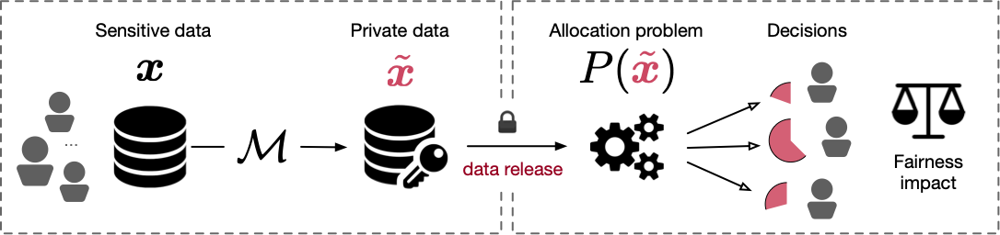

Ferdinando Fioretto

Many agencies or companies release statistics about groups of individuals that are then used as input to critical decision processes. For example, census data is used to allocate funds and distribute critical resources to states and jurisdictions. The resulting decisions can have significant societal and economic impacts for participating individuals. In many cases, the released data contain sensitive information whose privacy is strictly regulated and Differential Privacy (DP) has become the paradigm of choice for protecting data privacy. However, while differential privacy provides strong privacy guarantees on the released data, it has become apparent recently that it may induce biases and fairness issues in downstream decision processes, including the allotment of federal funds, apportionment of congressional seats, and distribution of vaccines and therapeutics. These biases and fairness issues may adversely affect the health, well-being, and sense of belonging of many individuals, and are poorly understood. This project addresses this knowledge gap at the intersection of privacy, fairness, bias, and decision processes. It will offer novel perspectives on differential privacy tools to address fairness and privacy jointly in critical decision processes. It will quantify the disparate impact arising in these applications and contribute novel mechanisms and mitigation techniques to overcome some of these issues. These contributions will be embedded in modeling and software tools to make the technology widely available and applicable.
From a scientific standpoint, this project will develop a new generation of privacy-preserving tools that, by exploiting knowledge from differential privacy, optimization, and programming languages, will address biases and fairness issues in their designs, not as an afterthought. The project contributes new scientific knowledge along with five directions: (1) it identifies and understands the structure of downstream decision processes that may be subject to fairness issues when using DP data releases; (2) it identifies and understands the structure of DP mechanisms that may introduce biases; (3) it defines theoretical frameworks to characterize and reason about biases and fairness issues; (4) it designs mitigation measures that would remove or alleviate the biases and fairness issues, finding an appropriate tradeoff between privacy, accuracy, and fairness; (5) it develops modeling and software tools to automatically identify and explain biases and fairness issues, and derive mitigation measures from the specification of the decision process.
Students and Collaborators
- Pascal Van Hentenryck, co-PI, Georgia Institute of Technology
- Coung Trang, Syracuse University.
- Keyu Zhu, Georgia Institute of Technology
Sponsors
| Collaborative Research: SaTC: CORE: Small: Privacy and Fairness in Critical Decision Making
National Science Foundation (2021 – 2024). |
Publications
- IJCAI
-
"Post-processing of Differentially Private Data: A Fairness Perspective".
Keyu Zhu, Ferdinando Fioretto, Pascal Van Hentenryck.
In Proceedings of the International Joint Conference on Artificial Intelligence (IJCAI), 2022.
Links: [preprint] Show: [Abstract] | [BibTeX]@inproceedings{Fioretto:IJCAI22b, author = "Keyu Zhu, Ferdinando Fioretto, Pascal {Van Hentenryck}", title = "Post-processing of Differentially Private Data: A Fairness Perspective", booktitle = "In Proceedings of the International Joint Conference on Artificial Intelligence ({IJCAI})", year = "2022", pages = "to appear", url = "to appear" }Copy to clipboardPost-processing immunity is a fundamental property of differential privacy: it enables arbitrary data-independent transformations to differentially private outputs without affecting their privacy guarantees. Post-processing is routinely applied in data-release applications, including census data, which are then used to make allocations with substantial societal impacts. This paper shows that post-processing causes disparate impacts on individuals or groups and analyzes two critical settings: the release of differentially private datasets and the use of such private datasets for downstream decisions, such as the allocation of funds informed by US Census data. In the first setting, the paper proposes tight bounds on the unfairness of traditional post-processing mechanisms, giving a unique tool to decision-makers to quantify the disparate impacts introduced by their release. In the second setting, this paper proposes a novel post-processing mechanism that is (approximately) optimal under different fairness metrics, either reducing fairness issues substantially or reducing the cost of privacy. The theoretical analysis is complemented with numerical simulations on Census data. - IJCAI
-
"Differential Privacy and Fairness in Decisions and Learning Tasks: A Survey".
Ferdinando Fioretto, Cuong Tran, Pascal Van Hentenryck, Keyu Zhu.
In Proceedings of the International Joint Conference on Artificial Intelligence (IJCAI), 2022.
Links: [preprint] Show: [Abstract] | [BibTeX]@inproceedings{Fioretto:IJCAI22a, author = "Ferdinando Fioretto, Cuong Tran, Pascal {Van Hentenryck}, Keyu Zhu", title = "Differential Privacy and Fairness in Decisions and Learning Tasks: A Survey", booktitle = "In Proceedings of the International Joint Conference on Artificial Intelligence ({IJCAI})", year = "2022", pages = "to appear", url = "to appear" }Copy to clipboardThis paper surveys recent work in the intersection of differential privacy (DP) and fairness. It reviews the conditions under which privacy and fairness may have aligned or contrasting goals, analyzes how and why DP may exacerbate bias and unfairness in decision problems and learning tasks, and describes available mitigation measures for the fairness issues arising in DP systems. The survey provides a unified understanding of the main challenges and potential risks arising when deploying privacy-preserving machine-learning or decisions-making tasks under a fairness lens. - PPAI
-
"A Fairness Analysis on Private Aggregation of Teacher Ensembles"
Cuong Tran, My H. Dinh, Kyle Beiter, Ferdinando Fioretto.
In Privacy-Preserving Artificial Intelligence (PPAI)–at AAAI, 2022.
Downloads: [pdf] [BibTex] | Links: [online] Show moreAbstract: The Private Aggregation of Teacher Ensembles (PATE) is an important private machine learning framework. It combines multiple learning models used as teachers for a student model that learns to predict an output chosen by noisy voting among the teachers. The resulting model satisfies differential privacy and has been shown effective in learning high-quality private models in semisupervised settings or when one wishes to protect the data labels. This paper asks whether this privacy-preserving framework introduces or exacerbates bias and unfairness and shows that PATE can introduce accuracy disparity among individuals and groups of individuals. The paper analyzes which algorithmic and data properties are responsible for the disproportionate impacts, why these aspects are affecting different groups disproportionately, and proposes guidelines to mitigate these effects. The proposed approach is evaluated on several datasets and settings. -
"SF-PATE: Scalable, Fair, and Private Aggregation of Teacher Ensembles".
Cuong Tran, Keyu Zhu, Ferdinando Fioretto, Pascal Van Hentenryck.
CoRR abs/2204.05157 [cs.LG], 2022.
Downloads: [pdf] [BibTex] | Links: [online] Show moreAbstract: A critical concern in data-driven processes is to build models whose outcomes do not discriminate against some demographic groups, including gender, ethnicity, or age. To ensure non-discrimination in learning tasks, knowledge of the group attributes is essential. However, in practice, these attributes may not be available due to legal and ethical requirements. To address this challenge, this paper studies a model that protects the privacy of the individuals' sensitive information while also allowing it to learn non-discriminatory predictors. A key characteristic of the proposed model is to enable the adoption of off-the-selves and non-private fair models to create a privacy-preserving and fair model. The paper analyzes the relation between accuracy, privacy, and fairness, and the experimental evaluation illustrates the benefits of the proposed models on several prediction tasks. In particular, this proposal is the first to allow both scalable and accurate training of private and fair models for very large neural networks. - NeurIPS
-
"Differentially Private Deep Learning under the Fairness Lens".
Cuong Tran, My H. Dinh, Ferdinando Fioretto.
In Conference on Neural Information Processing Systems (NeurIPS), 2021.
Downloads: [pdf] [BibTex] | Links: [online] Show moreAbstract: Differential Privacy (DP) is an important privacy-enhancing technology for private machine learning systems. It allows to measure and bound the risk associated with an individual participation in a computation. However, it was recently observed that DP learning systems may exacerbate bias and unfairness for different groups of individuals. This paper builds on these important observations and sheds light on the causes of the disparate impacts arising in the problem of differentially private empirical risk minimization. It focuses on the accuracy disparity arising among groups of individuals in two well-studied DP learning methods: output perturbation and differentially private stochastic gradient descent. The paper analyzes which data and model properties are responsible for the disproportionate impacts, why these aspects are affecting different groups disproportionately and proposes guidelines to mitigate these effects. The proposed approach is evaluated on several datasets and settings. - IJCAI
-
"Decision Making with Differential Privacy under the Fairness Lens".
Cuong Tran, Ferdinando Fioretto, Pascal Van Hentenryck, Zhiyan Yao.
In Proceedings of the International Joint Conference on Artificial Intelligence (IJCAI), 2021.
Downloads: TBA [pdf] [BibTex] | Links: [online] Show moreAbstract: Agencies, such as the U.S. Census Bureau, release data sets and statistics about groups of individuals that are used as input to a number of critical decision processes. To conform with privacy and confidentiality requirements, these agencies are often required to release privacy-preserving versions of the data. This paper studies the release of differentially private census datasets and analyzes their impact on some critical resource allocation tasks under a fairness perspective. The paper shows that, when the decisions take as input differentially private data, the noise added to achieve privacy disproportionately impacts some groups over others. The paper sheds light on the reason for these disproportionate impacts and proposes two approaches to mitigate these effects. Finally, the proposed approaches are evaluated on several resource allocation tasks that use differentially private census data.